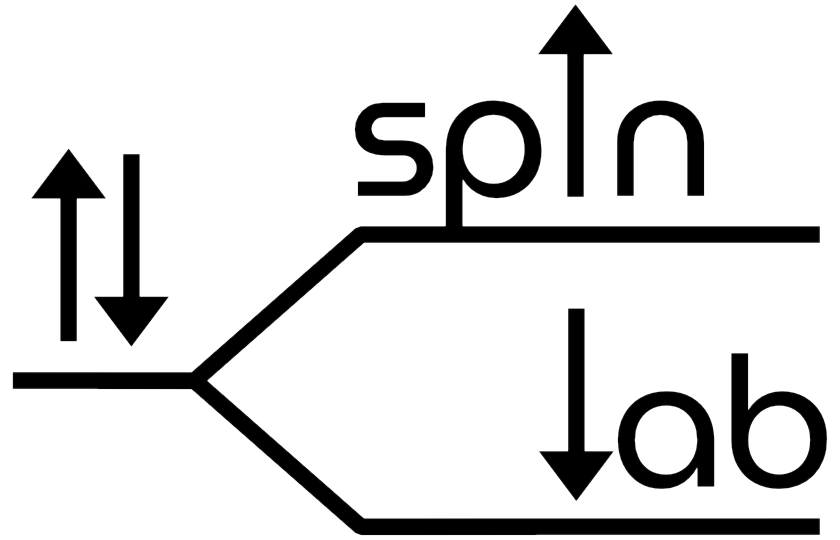

NMR Dashboard

All data is processed locally in your browser. Nothing is uploaded.
Starting Python…
acqu.par and data.2d; Tecmag: .tnt files). Tecmag .tnt files can also be dropped here directly.
Parameters
Show all parameters
Raw data
Processing
Results
How these results were produced (provenance)
The full record also holds your settings, the acquisition parameters, the random seeds and the exact params file, so the analysis can be audited and repeated. The command-line tool writes the same record next to every result.
Save
Every save also writes params_used.toml, provenance.json (inputs, settings, versions) and a summary.md. The PDF report is a 2–4 page record of the analysis: settings, key numbers with intervals, warnings, the main figures and the provenance.
Plot settings
Applied to the plots on this page and to the saved figures, except where noted. Kept in this browser for next time.
The decay figure is saved on a log y-axis when “log y-axis” is ticked on the plot. Tables always stay in seconds. The MCMC corner plot is saved as drawn.
One figure at a time (saved figures only)
Limits are in the plotted units (seconds for times) and apply to the main plot of the decay, model-comparison, ILT, α-sweep, bootstrap-band and T₂–D map figures; a title applies to any figure and wins over the global title setting. Empty boxes keep the automatic choice.
Spatial profile (FT of each echo)
Show more
Left: the signal summed over echoes against position z (the shaded band is the analysed window). Right: the magnitude of every echo after the transform. The map is drawn on the full zero-filled grid; zero-filling interpolates and adds no resolution, so the natural resolution (above) is what limits how finely features can be separated. + z is down, toward the magnet.
Spatially resolved fits
Show more
The exponential fits and the ILT are repeated at each position (the ILT on every zero-filled point, the exponential fits at the natural resolution unless you set a spacing). Positions closer than the natural resolution are not independent measurements; positions with too little signal are not fitted and show as gaps.
ILT viewer. Centre: the ILT map (T₂ vs position) with the peak tracks. Right: the spectrum at the selected position. Top: the signal at the selected T₂ along z. Drag the sliders, press ← → on a focused slider, or click the map to move the cut.
Peak tracks. Peaks are found on the spectrum summed over all positions and then followed at every position: each coloured line is the geometric-mean T₂ inside that peak's T₂ band (a band with under 1% of a position's signal is left blank there).
Open markers: that position's fit was flagged (a poorly determined component or no uncertainty estimate). Error bars are ± one standard error.
T₂–D spectrum
Regions
Few-population model
Each marker is a population with its 95% interval (open triangles: only a bound on D; open circles: not supported by the data); the grey map is the regularised solution and the shaded bands are diffusion coefficients the b-values cannot resolve. Dots are bootstrap or MCMC samples, when you have run them (Advanced settings on the Process tab).
Model comparison
Each model is fitted from 1 to 4 populations. ΔBIC is relative to the best; lower is better, and a ΔBIC above about 10 is strong evidence against that model. The chosen model is the one BIC prefers unless you set the number.
Data, fit and residual
Show more
Top and right: the spectrum along the selected D and the selected T₂ (or, with the box ticked, the sums over D and over T₂). The grey hatched band marks diffusion coefficients the b-values cannot resolve; region markers are open circles where the data constrain the region and × where they do not. Click the map to move the cut.
Bottom: the measured echo × b-value data, the fit, and the residual (which should look like noise, with no structure).
Decay and fits
Multi-exponential fitSaturation-recovery fit (T₁)
Show the model
Fit quality
Model comparison
Show more
AIC and BIC are only meaningful as differences between models fitted to the same data, so the table shows ΔAIC and ΔBIC relative to the best model (0 = best; a ΔBIC above ~10 is strong evidence against that model). RSS and MSE scale with the signal amplitude (and RSS with the number of data points); residual SD / amplitude and reduced χ² do not.
T₂ spectrum (ILT)
Show the model and how to read the spectrum
Orange diamonds are the exponential components. Each is drawn at the height an ILT peak holding the same amount of signal would have (using the width of the nearest ILT peak), so when the two analyses agree a diamond sits on top of its peak; labels give the fractions. A diamond well above or below a peak means the analyses disagree about how much signal is there.
How to read the α sweep
Each point is the ILT of your decay run again with a different smoothing strength α (labelled, from the sweep range you set). The horizontal axis is how badly that spectrum fits the data (RMSE, lower is better); the vertical axis is how rough the spectrum is (its curvature relative to its size, lower is smoother). Both axes are logarithmic.
Small α fits the data closely but gives a jagged spectrum with spurious peaks (top left); large α gives a smooth spectrum that no longer fits the data (bottom right). The curve is therefore L-shaped, and a good α sits near the bend, where more smoothing starts to cost fit quickly. A sensible choice also has an RMSE close to the noise level in the table above: fitting below the noise means fitting noise.
Not every dataset gives a clean L. If the RMSE hardly changes across the sweep, or the path doubles back on itself, the data are too noisy (or too simple, such as a single exponential) for the curve to pick α. Then judge by the spectra instead: choose an α where the peaks you care about stay put when α changes by a factor of ten either way.
Compare with the α you used (in the summary line below the spectrum). If it sits far along either arm of the L, try a value nearer the bend and check that the peaks you care about do not move much; peaks that appear or vanish as α changes are not well determined.
Uncertainty: MCMC and bootstrap
Methods compared
⚠ (shaded) marks a value that lies outside the intervals every other method gives (the odd one out); hover for which methods.
Show more
Each cell is value [interval at the chosen level]; a row shares one notation. Where the methods disagree, trust the sampling methods (MCMC, bootstrap) over the covariance: the least-squares interval assumes a Gaussian, symmetric likelihood.
MCMC
Show more
Trace: a few walkers (burn-in shaded); a healthy chain looks like stationary noise. Corner plot: marginal and pairwise posteriors; orange marks the least-squares fit. Strongly tilted or curved pair plots mean those parameters trade off against each other.
Bootstrap
Batch
Run the settings from the Process tab on every dataset that was loaded (a folder of datasets, several files, or the records of an arrayed file). Try the settings on one dataset first.
Batch: the same settings on every dataset
Only datasets of the same kind as this one are processed (others are listed as skipped). The T₂ range and other numbers on the Process tab are used as they are for every dataset.